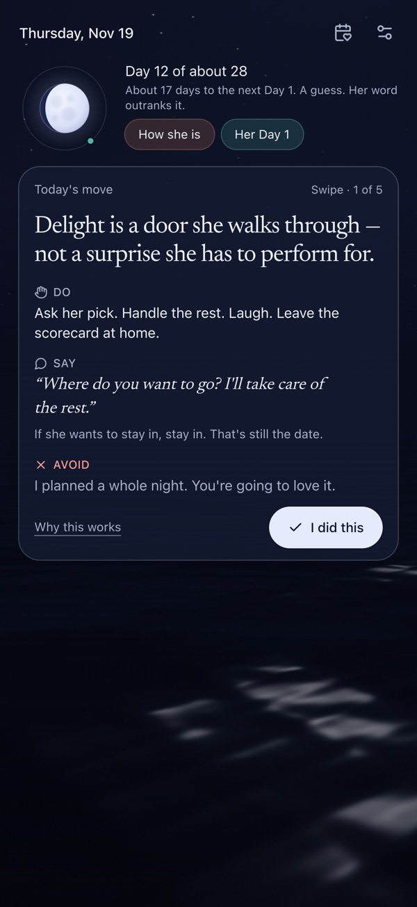
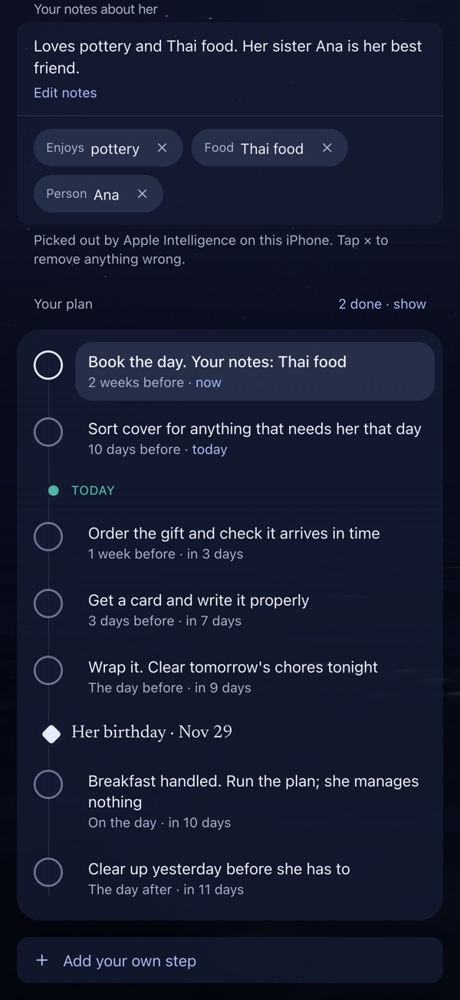
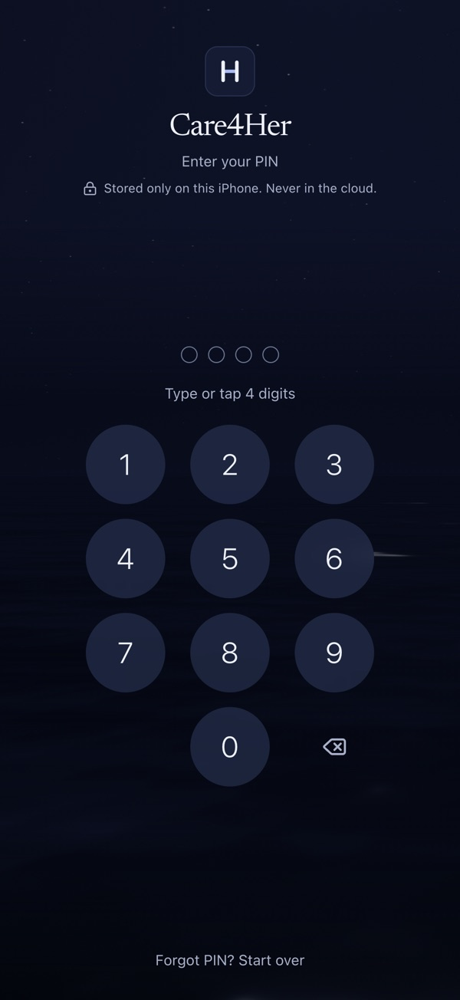

Care4Her
Care4HerOne small thing for her.
Every day.
Something to do, something to say, and something to avoid. Plans for the dates that matter. Private, on your iPhone only.
For iPhone · No account · No subscription · Works offline

How it works
Open it. Read one card. Do the thing.
No feeds, no streaks, no lectures. One move a day, short enough to read in the time it takes to make coffee.
Tell it how she is
Tired, low, busy, good. Her word changes the move. It always outranks the app's guess.
Swipe for another idea
Three to five moves each day. Pick the one that fits you both, and tap “Why this works” to see the research behind it.
Do it, then drop it
Tap “I did this.” No score, no applause expected.
Lower the bar so she doesn't have to perform okay.
- Do: Laundry done. Snacks in. Optional plan gone. Check in once, briefly.
I took a few things off the day. You don't have to be on.
- Bloating jokes. Hard talks you can have next week.
New in 1.1
The dates that matter, with a plan for each.
Her birthday, your anniversary, the kids' birthdays, something big coming up for her, and the hard days. As each one gets close, the day's move changes to fit, and its plan makes sure the gift is ordered and the evening is clear in time.
A plan for every date
Use the suggested plan as it is, or make it yours. It's laid out as a timeline, with today marked.
It notices when dates collide
A birthday two days after a hard anniversary, or her big week right before yours. The plan says what to have ready.
Apple Intelligence, on your iPhone only
Optional. Type a date the way you'd say it, and add notes about her that fit the plan to her. It runs on the iPhone's own chip, works offline, and sends nothing anywhere.

Private by design
Stored only on this iPhone.
No account, no server, no analytics. We couldn't see what you enter even if we wanted to.
Privacy
Everything stays on this iPhone, encrypted. No account, no cloud, no backups. Works with no internet, Apple Intelligence included.
What we never do

Support
Common questions
Something else? Write to contact@zeeqai.com. We usually reply within two working days.
Questions
I forgot my PIN.
On the lock screen, tap “Forgot PIN? Start over”. There is no account, so nothing can be recovered. That is what keeps it private.
I got a new iPhone. Where is my data?
Care4Her keeps everything on the phone it was set up on, and never in backups or iCloud. On a new phone you start fresh.
Does it need the internet?
No. It works fully offline and sends nothing anywhere.
Do I have to enter dates?
No. Choose “Use it without dates” during setup, or turn “Keep her dates” off later in Settings, which deletes them. You'll get everyday moves instead.
Can I turn the moving background off?
Yes. Settings → Background lets you pick Ocean, Calm ocean, Still or Off. The app also follows your iPhone's Reduce Motion setting.
Does Apple Intelligence send my notes anywhere?
No. Care4Her uses only Apple's on-device model, on iPhones that have Apple Intelligence turned on. It runs on the phone's own chip and works in flight mode. It's off until you turn it on in Settings, and turning it off deletes everything it picked out.
What do date alerts show on my lock screen?
At most one alert a day, saying only “2 things to do today” or “Something's coming up”. Turn on “Say what's due” in Settings if you want it to name the step and the date.
Is there a subscription?
No. You pay once on the App Store. No in-app purchases.
Not medical advice